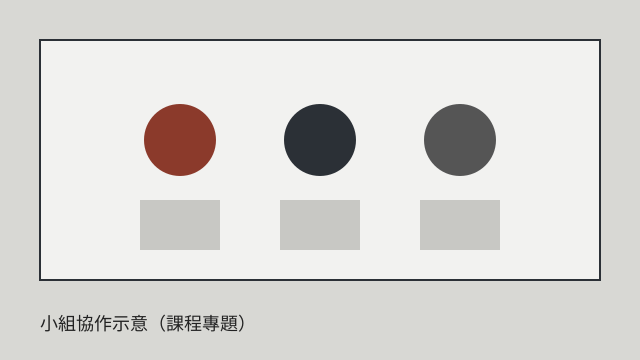

我們的目標
- 提供同學常用的文具與生活小物
- 用簡單流程完成選購與總額計算
- 示範跨裝置瀏覽的基本做法
理念：少一點花巧裝飾，多一點清楚資訊。
「巷口選物」是為 VIT2621 小型專題研習而設計的示範購物網站。我們希望以樸素、清楚的版面，展示網站的基本元素：導覽、內容區塊、表格、圖片與互動表單。
設計原則強調：文字可讀、按鈕用途明確、在不同螢幕寬度下仍能看到相近內容（RWD）。
理念：少一點花巧裝飾，多一點清楚資訊。

以下表格整理本店服務時段與取貨方式，方便同學查閱。
| 項目 | 內容 | 備註 |
|---|---|---|
| 營業日 | 星期一至星期五 | 公眾假期休息 |
| 服務時間 | 10:00 – 17:00 | 午膳 12:30 – 13:30 暫停取貨 |
| 取貨地點 | 校園服務台（示意） | 下單後 1–2 個工作天可取 |
| 運費 | 未滿 HK$200 收 HK$20；滿額免運 | 只限校園範圍 |
| 付款 | 取貨時現金／轉數快（示意） | 本示範網站不處理真實付款 |

本站以最新的 HTML5、CSS3 與原生 JavaScript 完成，沒有使用 TypeScript 或前端框架。
評分相關重點：多頁結構、表格與文字、相片、CSS 外觀、格式化文字、合宜佈局、RWD、JS 輸入／選貨／數量與總額計算。